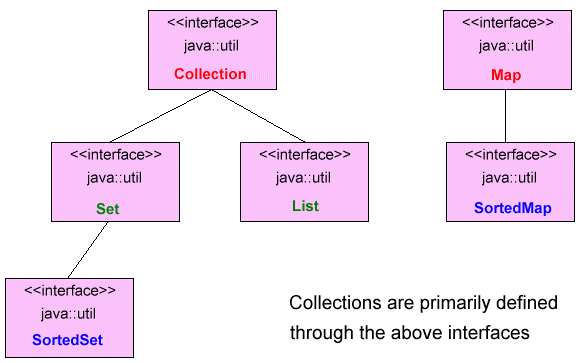

Return to the Java Programming Corner.
Return to the Java Programming Corner.

Java Collections Framework Overview
Return to the Java Programming Corner.
Contents
In general, most Java programs that need to store and manipulate a group of objects will only know the number and type of new elements based on some criteria that will only be known at runtime. In short, as a programmer, you will need to store many objects in a common structure that needs to be manipulated as a group.To get around this issue, Java provides the ability to hold objects (or in this case, the references to the objects). Indeed, Java provides a built-in Array, but this may not work in all situations. (See the Array Example in this section for a detailed look at Java arrays).
The Java 2 utilities library (
java.util) includes a complete set of container classes (also known as collection classes). The Java 2 libraries, although, use the name Collection to refer to a particular subset of the library. It really makes this issue confusing as you will see authors using both terms: "Collections" and "Container". To confuse the issue even further, Java uses the term "Containers" within the context of the AWT and Swing libraries.I tend to use the more popular reference in calling them "Collection" classes or like in much of the documentation and books on the subject, the "Java Collections Framework".
Java 2 Collections Framework Overview
A Collection (sometimes called a Container) is a group of data that is manipulated as a single object. This corresponds to a bag.The idea behind Java's Collection Framework (also called the Container Class Library) is to inslulate client programs from common implementations like an array, linked list, hash table, balanced binary tree, etc.
The Collection Framework is very similar to the Standard Template Library (STL) found in C++. Collections can contain only Object reference types (no primitives). The programmer can make a container class thread safe (concurrent access) as well as making it not-modifiable.
(i) = Interface
(c) = Class
The Java 2 Collections are primarily defained through 4 core interfaces and 2 special (sorted) interfaces. The following diagram shows all 6 interfaces.
Interfaces are used for the following reasons:
- Programs that use an interface are not tightened to a specific implementation of a collection.
- It is easy to change or replace the underlying collection class with another (more efficient) class that implements the same interface.
The Java 2 Collections Framework takes the issue of "holding your objects" and divides it into two distinct concepts: Collections and Maps. The key distinction between the two types of containers is the number of items that each holds in an individual location. A Collection holds one element while a Map holds two.Collection
A group of individual elements, often with some rule applied to them. A List must hold the elements in a particular order (or sequence), while a Set cannot have any duplicate elements.
- List - (ArrayList, LinkedList)
- Set - (HashSet, TreeSet)
MAP
A group of "key=value" object pairs. Although this looks like a "Collection of pairs", trying to implement it in this way would prove very difficult. A Map can be thought of as a mini database. A flavor of a Map is a HashMap.As a Perl programmer, the idea of a Map may look familar. It is basically an "Associative Array". (In short, your keys are not integers like that of an array, they are Strings). Use the put() method [passing the key and value] to add an element to a Map.
- Map - (HashMap, TreeMap)
Arrays are very simple to implement in Java but has several drawbacks:
- All items in the array have to be of the same type.
- Must know in advance how many items will need to be stored since Arrays are fixed in size. (Keep in mind though that Arrays can be resized)
Here are a few notes about implementing an Array:
- Most efficient way to hold references to objects.
- Arrays can be of any built-in type (primitive) or any object type.
- For Arrays that store built-in types, the data is store directly in the Array.
- For Arrays that store objects, only the object "reference" is actually stored in the Array. Keep in mind that all normal rules of reference variables and casting apply.
- An array knows the type it holds, i.e., compile-time type checking.
- An array knows its size, i.e., ask for the length.
- An array can only hold one type of object (including primitives).
- Arrays are fixed in size.
- For all Arrays declared as Object[], then object references of ANY type can be stored in it without casting, though a valid cast is required to take an Object reference out and use it as its original type.
- Define an array using either of the following: int[] a1; = OR = int a1[];
Both declarations produce the same result. The later actually conforms to expectations from C and C++ programmers. The former, however, is probably a more sensible syntax, since it seems to directly say: "an int array". This is the style used by most Java Programmers.
- Reasonable integrity if provided by type checking.
- The runtime system always checks array bounds.
- Easy to return an array (the method simply returns a reference to the Array), but with Java you don't have to worry about memory leaks (since the garbage collector takes on this responsibility) like with C and C++.
Java provides a helper class called
java.util.Arrays:
- Search and Sort: binarySearch(), sort()
- Comparison: equals() (many overloaded)
- Instantiation: fill()
- Conversion: asList()
The idea behind the Iterator interface is to provide a way to select each element in a collection.
Legacy Java 1.0/1.1 Collections
So why talk about old Java containers? A termendous amount of code has already been writting in Java 1.0 and 1.1 using these old and unsupported containers. Although you will not be writing new code using old containers, you should at the very least be aware of them and their use.The primary classes included as "legacy classes" are:
Vector
- Vector
- Hashtable
- Stack
The Vector container, was the only self-expanding sequence (Array) in Java 1.0/1.1. It was this reason why some much code in the past included it. Programmers should instead use the "ArrayList" container as a replacement for the Vector.
If you work with Vectors, you should notice a brief extra pause once in a while when adding objects. The Vector call simply reallocates and copies to implement it expanding. I provide an example of this in the simple "Array Example".
Keep in mind that Vector is simply a class and not part of the Java syntax. It defines its own methods for adding and retrieving objects from the container. An important distinction is that Vector is contained in the java.lang.Object package while Java 2 container classes are provided in java.util.
One big difference between a Vector and an ArrayList is that the methods of the Vector class are synchronized, meaning that they can be accessed from multiple threads. This does mean that there will be more overhead with the Vector making the ArrayList a bit faster.
The Vector container was adapted so that it could fit as a Collection and a List. Keep in mind though, that the Vector container "WAS NOT" improved in the new Java 2 container libraries, but rather included only to support pre-Java 2 code.
Enumeration
To perform iteration in Java 1.0/1.1, programmers would use an "Enumeration". The Enumeration interface is much smaller than its successor "Iterator", with only two longer method names:
- boolean hasMoreElements() Produces "true" if this enumeration contains more elements.
- Object nextElement() Returns the next element of this enumeration if there are any more elements. (Else is throwsan exception)
Like mentioned already, use Iteration in place of Enumeration.
Hashtable
In short, use HashMap as opposed to Hashtable. In performance studies, it can be shown that HashMap and Hashtable are very similar (even down to its method names). There is no reason to use Hashtable instead of HashMap in all new code.
Stack
In Java 1.0/1.1, the Stack container is inherited from Vector. (Basically, a Stack has all of the characteristics and behaviors of a Vector with several extra Stack behaviors).
In short, use a LinkedList when you want to implement Stack behavior.
BitSet
This was used to efficiently store many "on/off" information. It's efficiency was only seen in size; not for speed. The BitSet container has been seen to be slightly slower than using an array of some native type.
The minimum size of the BitSet is that of a long: 64 bits. If you want to store anything smaller, say 8 bits, a BitSet would be wasteful.